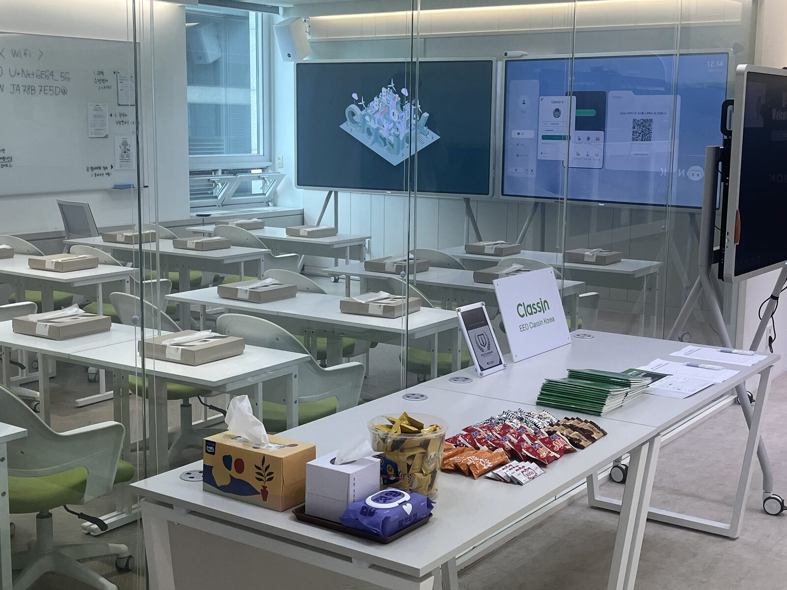
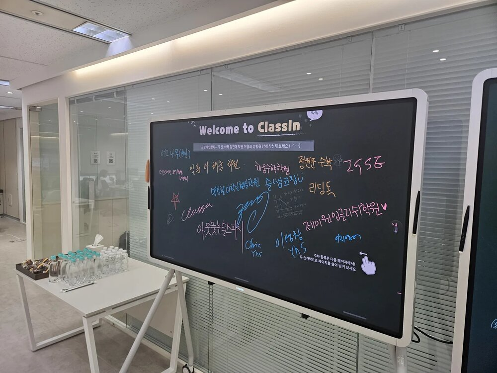

B2B SaaS 세일즈와 고객 운영
- 소속
- EEO ClassIn Korea
- 기간
- 재직 중
- 역할
- Senior Account Executive(영업·고객 운영)
- 관련 업무
- 성장 지원
주요 업무
- 학원·교육기관 대상 신규 고객 발굴 및 제품 데모(목동 쇼룸·고객 현장)
- 고객사 니즈 기반 맞춤형 스마트클래스룸·온라인 수업 운영안 제안
- 계약 전환 및 도입 초기 운영 지원
- 고객사 기능 문의, API 연동 요청, 사용 이슈 취합 및 대응
- 고객 요구를 개발 요구사항으로 정리해 본사 개발팀과 기능 개선·기술 검토 조율

